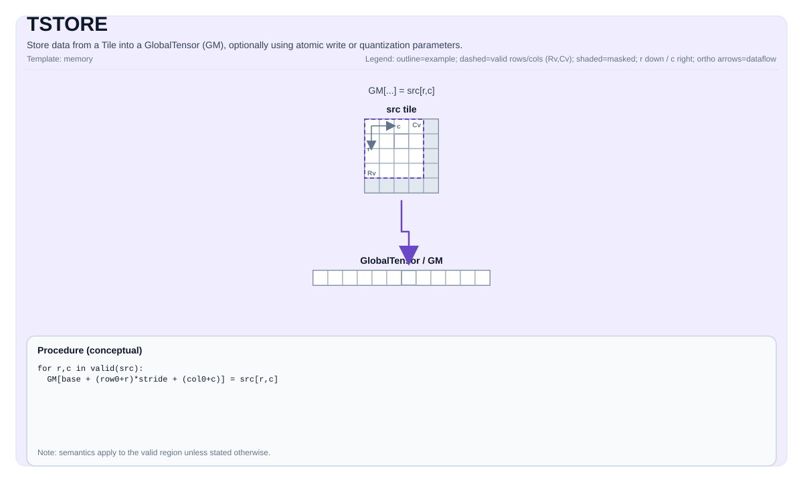

TSTORE¶
指令示意图¶

简介¶
将Tile中的数据存储到GlobalTensor (GM)，可选使用原子写入或量化参数。
数学语义¶
符号表示取决于 GlobalTensor 的形状/步长和 Tile 的布局。概念上（二维视图，带基础偏移量）：
\[ \mathrm{dst}_{r_0 + i,\; c_0 + j} = \mathrm{src}_{i,j} \]
汇编语法¶
同步形式：
tstore %t1, %sv_out[%c0, %c0]AS Level 1（SSA）¶
pto.tstore %src, %mem : (!pto.tile<...>, !pto.partition_tensor_view<MxNxdtype>) -> ()AS Level 2（DPS）¶
pto.tstore ins(%src : !pto.tile_buf<...>) outs(%mem : !pto.partition_tensor_view<MxNxdtype>)C++内建接口¶
声明于 include/pto/common/pto_instr.hpp 和 include/pto/common/constants.hpp：
公共包含头为
<pto/pto-inst.hpp>，内部声明位于pto/common/pto_instr.hpp。
template <typename TileData, typename GlobalData, AtomicType atomicType = AtomicType::AtomicNone,
typename... WaitEvents>
PTO_INST RecordEvent TSTORE(GlobalData& dst, TileData& src, WaitEvents&... events);
template <typename TileData, typename GlobalData, AtomicType atomicType = AtomicType::AtomicNone,
typename... WaitEvents>
PTO_INST RecordEvent TSTORE(GlobalData& dst, TileData& src, uint64_t preQuantScalar, WaitEvents&... events);
template <typename TileData, typename GlobalData, typename FpTileData, AtomicType atomicType = AtomicType::AtomicNone,
ReluPreMode reluPreMode = ReluPreMode::NoRelu, typename... WaitEvents>
PTO_INST RecordEvent TSTORE(GlobalData& dst, TileData& src, FpTileData& fp, WaitEvents&... events);
template <typename TileData, typename GlobalData, typename FpTileData, AtomicType atomicType = AtomicType::AtomicNone,
ReluPreMode reluPreMode = ReluPreMode::NoRelu, typename... WaitEvents>
PTO_INST RecordEvent TSTORE_FP(GlobalData& dst, TileData& src, FpTileData& fp, WaitEvents&... events);TSTORE_FP(...) 为历史 fp 量化形式保留源码兼容入口，并直接映射到 TSTORE_IMPL(dst, src, fp)。
规范同名 TSTORE(..., fp, ...) 重载仅在 FpTileData::Loc == TileType::Scaling 时参与匹配；
后端实现仍可继续检查额外合法性。
向量量化 STPhase 形式仅在存在对应后端实现的目标上暴露
（A5、kirin9030、kirinDev0000 和 CPU 模拟器）。
约束¶
- 实现检查 （Atlas A2/A3 训练系列产品/Atlas A2/A3 推理系列产品）:
- 源tile位置必须是以下之一：
TileType::Vec、TileType::Mat、TileType::Acc。 - 运行时：所有
dst.GetShape(dim)值和src.GetValidRow()/GetValidCol()必须> 0。 - 对于源tile位置为
TileType::Vec/TileType::Mat：TileData::DType必须是以下之一：int8_t、uint8_t、int16_t、uint16_t、int32_t、uint32_t、int64_t、uint64_t、half、bfloat16_t、float。sizeof(TileData::DType) == sizeof(GlobalData::DType)。- 布局必须匹配ND/DN/NZ（或特殊情况：
TileData::Rows == 1或TileData::Cols == 1）。 - 对于
int64_t/uint64_t，仅支持ND->ND或DN->DN。
-
对于源tile位置为
TileType::Acc（包括带量化参数的调用形式和原子写入变体）：- 支持的布局转换：NZ2ND、NZ2NZ、NZ2NC1HWC0、NZ2NDC1HWC0。不支持NZ2DN。
- 目标布局必须是ND、NZ、NC1HWC0或NDC1HWC0。
- 源数据类型必须是
int32_t或float。 - 不使用量化时，目标数据类型必须是
int32_t/float/half/bfloat16_t。 - ACC到GM的数据类型支持取决于调用形式：
调用形式 源数据类型 支持的目标数据类型 TSTORE(dst, acc)floatfloat、half、bfloat16_tTSTORE(dst, acc)int32_tint32_tTSTORE(dst, acc, preQuantScalar)/TSTORE(dst, acc, fp)/TSTORE_FP(dst, acc, fp)floatint8_t、uint8_tTSTORE(dst, acc, preQuantScalar)/TSTORE(dst, acc, fp)/TSTORE_FP(dst, acc, fp)int32_tint8_t、uint8_t、half其它未列出的跨类型组合不属于支持范围。
- 静态形状约束：
1 <= TileData::Cols <= 4095；如果是ND则1 <= TileData::Rows <= 8192；如果是NZ、NC1HWC0或NDC1HWC0则1 <= TileData::Rows <= 65535且TileData::Cols % 16 == 0。 - 运行时：
1 <= src.GetValidCol() <= 4095。 - 实现检查 (Ascend 950PR/Ascend 950DT):
- 源tile位置必须是
TileType::Vec或TileType::Acc（此目标不支持Mat存储）。 - 对于源tile位置为
TileType::Vec：
- 源tile位置必须是
sizeof(TileData::DType) == sizeof(GlobalData::DType)。TileData::DType必须是以下之一：int8_t、uint8_t、int16_t、uint16_t、int32_t、uint32_t、int64_t、uint64_t、half、bfloat16_t、float、float8_e4m3_t、float8_e5m2_t、hifloat8_t、float8_e8m0_t、float4_e1m2x2_t、float4_e2m1x2_t。- 布局必须匹配ND/DN/NZ（或特殊情况：
TileData::Rows == 1或TileData::Cols == 1）。 - 强制执行额外的对齐约束（例如，对于ND，行主序宽度（以字节为单位）必须是32的倍数；对于DN，列主序高度（以字节为单位）必须是32的倍数，但有特殊情况例外）。
- 对于源tile位置为
TileType::Acc（包括带量化参数的调用形式和原子写入变体）：
- 对于源tile位置为
- 支持的布局转换：NZ2ND、NZ2NZ、NZ2NHWC、NZ2NCHW、NZ2NCDHW。不支持NZ2DN。
- 目标布局必须是ND、NZ、NHWC、NCHW或NCDHW；源数据类型必须是
int32_t或float。 - 不使用量化时，目标数据类型必须是
int32_t/float/half/bfloat16_t。 - ACC到GM的数据类型支持取决于调用形式：
调用形式 源数据类型 支持的目标数据类型 TSTORE(dst, acc)floatfloat、half、bfloat16_tTSTORE(dst, acc)int32_tint32_tTSTORE(dst, acc, preQuantScalar)/TSTORE(dst, acc, fp)/TSTORE_FP(dst, acc, fp)floatint8_t、uint8_t、half、bfloat16_t、hifloat8_t、float8_e4m3_t、floatTSTORE(dst, acc, preQuantScalar)/TSTORE(dst, acc, fp)/TSTORE_FP(dst, acc, fp)int32_tint8_t、uint8_t、half、bfloat16_t其它未列出的跨类型组合不属于支持范围。
- 静态形状约束与Atlas A2/A3 训练系列产品/Atlas A2/A3 推理系列产品对于行/列的约束相同；
AtomicAdd额外限制目标数据类型为支持的原子类型。 - 有效区域:
- 实现使用
src.GetValidRow()/src.GetValidCol()作为传输大小。
- 实现使用
- 源tile位置必须是以下之一：
示例¶
自动（Auto）¶
#include <pto/pto-inst.hpp>
using namespace pto;
template <typename T>
void example_auto(__gm__ T* out) {
using TileT = Tile<TileType::Vec, T, 16, 16>;
using GShape = Shape<1, 1, 1, 16, 16>;
using GStride = BaseShape2D<T, 16, 16, Layout::ND>;
using GTensor = GlobalTensor<T, GShape, GStride, Layout::ND>;
GTensor gout(out);
TileT t;
TSTORE(gout, t);
}手动（Manual）¶
#include <pto/pto-inst.hpp>
using namespace pto;
template <typename T>
void example_manual(__gm__ T* out) {
using TileT = Tile<TileType::Vec, T, 16, 16>;
using GShape = Shape<1, 1, 1, 16, 16>;
using GStride = BaseShape2D<T, 16, 16, Layout::ND>;
using GTensor = GlobalTensor<T, GShape, GStride, Layout::ND>;
GTensor gout(out);
TileT t;
TASSIGN(t, 0x1000);
TSTORE<TileT, GTensor, AtomicType::AtomicAdd>(gout, t);
}汇编示例（ASM）¶
自动模式¶
# 自动模式：由编译器/运行时负责资源放置与调度。
pto.tstore %src, %mem : (!pto.tile<...>, !pto.partition_tensor_view<MxNxdtype>) -> ()手动模式¶
# 手动模式：先显式绑定资源，再发射指令。
# 可选（当该指令包含 tile 操作数时）：
# pto.tassign %arg0, @tile(0x1000)
# pto.tassign %arg1, @tile(0x2000)
pto.tstore %src, %mem : (!pto.tile<...>, !pto.partition_tensor_view<MxNxdtype>) -> ()PTO汇编形式¶
tstore %t1, %sv_out[%c0, %c0]
# AS Level 2 (DPS)
pto.tstore ins(%src : !pto.tile_buf<...>) outs(%mem : !pto.partition_tensor_view<MxNxdtype>)